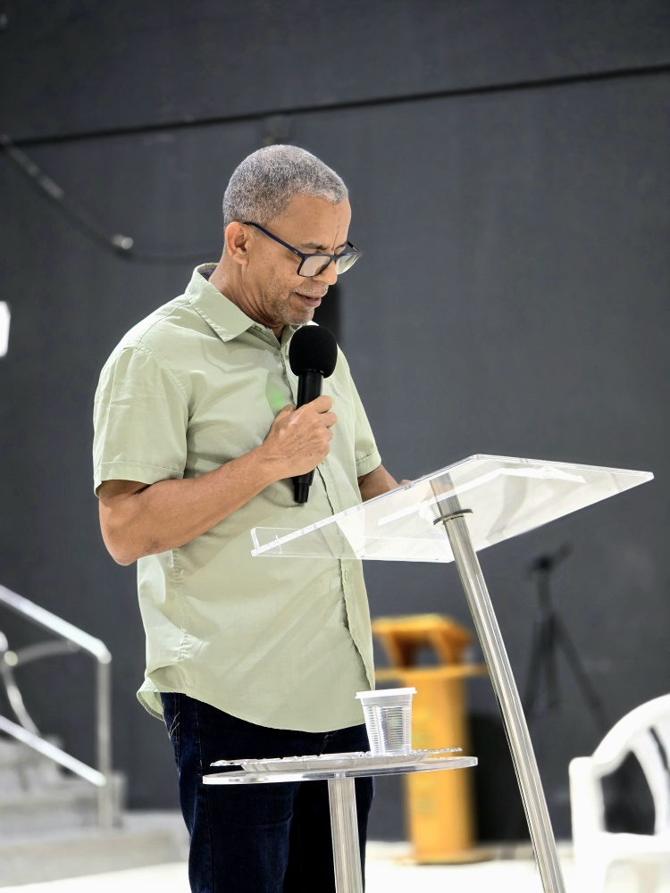
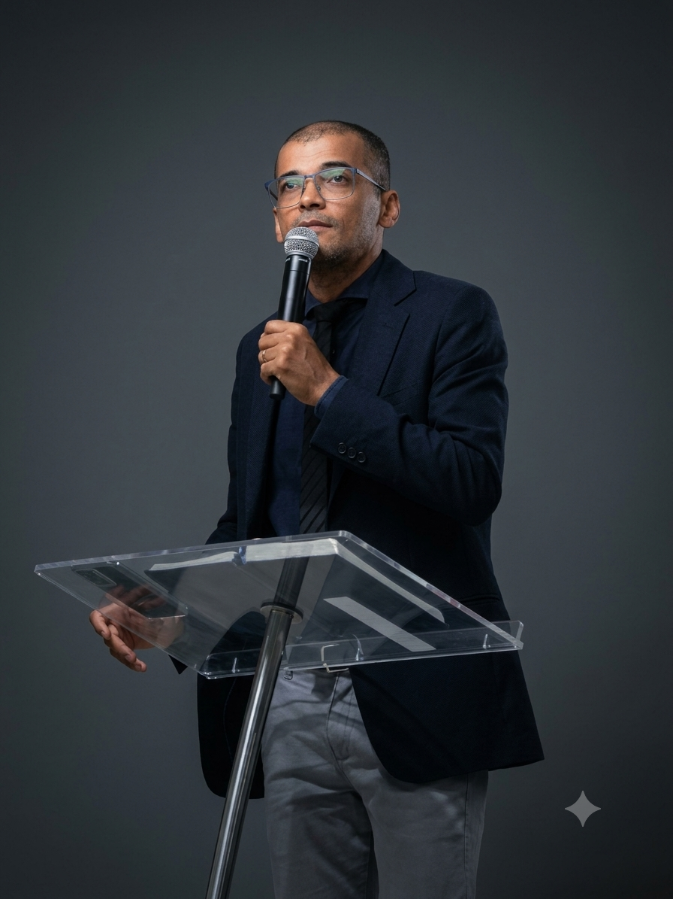

Nossos Pastores
Toque no card para conhecer a história e ministério de cada pastor.
José Vieira e Iraci
Com mais de 20 anos dedicados ao ministério pastoral, o Pr. José Vieira lidera a Igreja Betel com foco no ensino expositivo da Palavra, discipulado e fortalecimento das famílias em Santo Antônio de Jesus.
- Bacharel em Teologia pelo Seminário Teológico
- Pós-graduado em Aconselhamento Pastoral
- Especialização em Liderança Cristã

Iran e Rosa
O Pr. Iran atua diretamente no acompanhamento ministerial e na organização dos eventos e células da igreja. Tem grande paixão pela evangelização e por cultivar um ambiente acolhedor.
- Bacharel em Teologia
- Curso de Extensão em Evangelismo e Missões
- Capacitação em Gestão de Ministérios

Samuel e Patrícia
Focado no desenvolvimento de jovens e apoio à equipe de louvor e ensino, o Pr. Samuel dedica-se ao fortalecimento teológico da nova geração de membros.
- Graduação em Teologia Ministerial
- Especialização em Ministério com Juventude
- Treinamento em Pregação Expositiva
Neilton e Penha
O Pr. Neilton é responsável pelas frentes de cuidado com casais e visitação pastoral, trazendo uma longa vivência de apoio emocional e espiritual às famílias da comunidade.
- Bacharel em Teologia Pastoral
- Capacitação em Aconselhamento Familiar